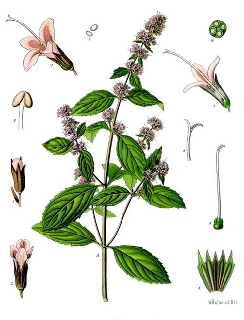

Mięta pieprzowa


Opis i występowanie
Mięta pieprzowa to międzygatunkowy mieszaniec mięty wodnej i mięty zielonej (Mentha aquatica × Mentha spicata). Wyhodowana w XVIII w. w Anglii. Bylina z kłączami rozłogowymi (rozrasta się szybko!).
Łodyga czworokątna (typowa dla jasnotowatych), brunatnoczerwonawa, prosta. Liście naprzeciwległe, jajowate, ząbkowane, ciemnozielone. Kwiaty drobne, różowofioletowe, w kłosie na szczycie pędu.
Cała roślina ma charakterystyczny chłodzący aromat dzięki mentolowi w olejku eterycznym. W Polsce uprawiana wszędzie w ogrodach, dziczejąca w wilgotnych miejscach.
Mięta polna (Mentha arvensis) — dzika kuzynka mięty pieprzowej, rośnie na wilgotnych łąkach, polach i brzegach rowów w całej Polsce. Zawiera mniej mentolu (ok. 20–30% vs 50% w pieprzowej), przez co aromat jest łagodniejszy. Stosowana podobnie — na trawienie, wzdęcia, jako herbatka — ale słabiej działa. Zaletą jest dzika dostępność i możliwość zbierania w naturze.
Skład
| Składnik | Działanie |
|---|---|
| Olejek eteryczny (~2%) | — Mentol (50%) — chłodzący, znieczulający |
| — Menton, mentofuran — rozkurczowe | |
| Flawonoidy (luteolina, mentozyd) | Żółciopędne, antyoksydacyjne |
| Garbniki, gorycze | Trawienne, ściągające |
| Witaminy A, C, kwas foliowy | — |
| Sole mineralne (potas, żelazo, mangan) | — |
Na co pomaga
- Trawienie — wzdęcia, kolki, niestrawność, zgaga (uwaga: czasem nasila!).
- Nudności, mdłości (podróżne, ciążowe, pochemioterapeutyczne).
- Migreny, bóle głowy — wcieranie olejku w skronie.
- Zespół jelita drażliwego (IBS) — kapsułki z olejkiem miętowym są skuteczne (badania).
- Drogi oddechowe — katar, zatkany nos (inhalacje), nieprzyjemny oddech.
- Bóle mięśniowe, reumatyczne — wcierki z olejku.
- Stres, napięcie — działanie uspokajające w naparach.
- Świąd skóry — chłodzące okłady.
- Higiena jamy ustnej — naturalny odświeżacz oddechu, w pastach do zębów.
Zbiór i suszenie
- Liście: tuż przed kwitnieniem (czerwiec-lipiec) — najwięcej olejku. W słoneczne dni rano po obeschnięciu rosy.
- Ścinaj górną część pędu (15-20 cm).
- Suszenie: w pęczkach, głowami w dół, w cieniu, max 35°C (mentol ulatnia się!).
- Przechowywanie: w szczelnych słoikach, max 12 mies. Najlepiej całe liście, mielić tuż przed użyciem.
Przepisy
🍵 Napar (klasyk na trawienie)
- Łyżkę suchych liści (lub 2 łyżki świeżych) zalej szklanką wrzątku.
- Przykryj, parzy 5-10 min (dłużej → goryczka).
- Pij po posiłku lub przy mdłościach. Można z miodem i cytryną.
💨 Inhalacja na katar i zatoki
- Wrzącą wodę wlej do miski, dodaj liście miętowe lub kilka kropli olejku.
- Przykryj głowę ręcznikiem, pochyl się nad miską (z odpowiedniej odległości).
- Wdychaj parę 10-15 min. Bardzo udrażnia nos i zatoki.
🧴 Tonik miętowy do skóry tłustej
- Zalej liście wrzątkiem, odstaw na godzinę.
- Przecedź, przelej do butelki.
- Przemywaj twarz rano i wieczorem. Świeży, chłodzący efekt.
- W lodówce trzyma się 4-5 dni. Można dodać 1 łyżeczkę soku z cytryny dla skóry tłustej.
🥤 Świeża woda z miętą i cytryną
- Świeże listki mięty lekko zgnij w dłoni (uwalniają aromat).
- Wrzuć do dzbanka z zimną wodą i plasterkami cytryny.
- Schłodź 30 min. Doskonałe nawodnienie w upalne dni.
- Można dodać kawałki ogórka i lód.
🍯 Syrop miętowy (do drinków i deserów)
- 200g cukru rozpuść w 200 ml wody na ogniu.
- Gdy syrop powstanie (przezroczysty), wrzuć garść świeżych umytych liści mięty.
- Zdejmij z ognia, przykryj, odstaw na 1 h.
- Przecedź, przelej do butelki. Trzyma 1 mies. w lodówce.
- Dodawaj do mojito, lemoniad, deserów (lody, sernik).
✓ Zalety
- Jeden z najprzyjemniejszych smaków ziołowych
- Bardzo szerokie zastosowanie — trawienie, nudności, migreny, oddech
- Łatwo uprawiać — rośnie wszędzie, ekspansywna
- Można używać świeżej, suszonej, jako olejku
- Świetne towarzystwo do herbat, deserów, drinków, sałatek
- Bardzo dobrze tolerowana przez dorosłych
✗ Wady i przeciwwskazania
- Refluks żołądkowo-przełykowy (zgaga) — mięta rozluźnia zwieracz przełyku, może nasilać objawy!
- Kamica żółciowa — może wywoływać kolkę
- Dzieci poniżej 3 lat — nie stosować olejku miętowego (mentol)
- Niemowlęta poniżej 6 mies. — nie stosować w żadnej formie
- Ciąża — można pić napar w umiarkowanych ilościach, ale nie olejku
- Może wchodzić w interakcje z lekami (cytochrom P450)
- Bardzo ekspansywna — sadź w doniczce, inaczej zarośnie ogród
Ciekawostki
- Nazwa pochodzi od greckiej nimfy Minthe, przemienionej w roślinę przez zazdrosną Persefonę.
- W starożytności Rzymianie używali mięty na biesiadnych stołach jako odświeżacz oddechu po jedzeniu.
- Polska należy do czołowych producentów olejku miętowego w Europie. Plantacje wokół Łowicza i Tomaszowa.
- Wszystkie pasty do zębów na świecie zawdzięczają smak mentolowi — pierwszym kandydatem był olejek miętowy.
- Mięta posadzona w pobliżu kapusty odstrasza szkodniki (białek, mszyce).
- W Maroku herbata miętowa (z zieloną herbatą gunpowder) to symbol gościnności.